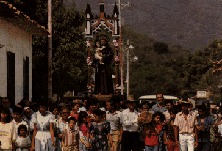
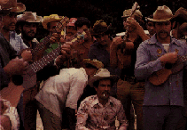

HOME FUNDEF
| La Batalla | La Bella | El Chichivamos o Yeyevamos | La Juruminga |
|---|
| El Poco a Poco | La Perrendenga | El Galerón | El Seis Figuriao |
|---|
|  Foto: Archivo Fundef |
La fiesta de San Antonio de Padua se celebra el trece de junio cuando se bendice el pan de
San Antonio. Se cumplen promesas por los favores recibidos en los que se incluye
la salud, la recuperación de objetos perdidos y hasta el encuentro de
buenas parejas. La fiesta o baile de los negros de San Antonio es llamada
también Tamunangue. |
|---|
Esta expresión es de origen religioso popular, propia del Estado Lara, en la región centro-occidental de Venezuela. La misma se celebra como pago de promesas a San Antonio de Padua el día 13 de junio, día en que la iglesia católica ha designado al mismo santo. Sin embargo el Tamunangue puede llevarse a cabo cualquier otro día del año para cumplir las promesas de algún devoto.
El Tamunangue consta de siete danzas o sones, los cuales van precedidos por la Salve y por una pieza independiente conocida como La Batalla, la cual suele ejecutarse durante la procesión.
El conjunto musical lo conforman básicamente instrumentos como: cuatro, cinco, conocido también como quinto o lira, tiple, tambor y maracas. La cantidad de instrumentos varía de acuerdo con el tamaño del conjunto, llegando a veces a duplicarse. En ocasiones se incorporan instrumentos de cuerdas dobles, los cuales son variantes de los señalados anteriormente.
|  Foto: Archivo Fundef |
En cuanto a la indumentaria no existe un traje específico para la ocasión, simplemente todos se visten con sus mejores galas. En algunas ocasiones especiales las mujeres llevan faldas largas y blusa de faralaos escotada hasta los hombros, flores en el cabello y alpargatas. No obstante, esto tiende a desaparecer. |
|---|